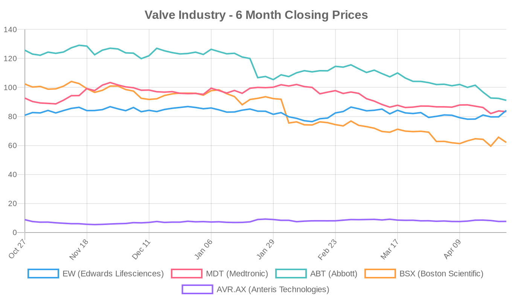
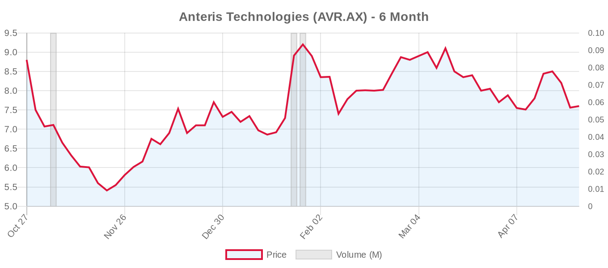

|
||||||||
|
April 27, 2026 By E. Nolan Beckett |
||||||||
|
||||||||
Executive SummaryToday's research roundup centers on aortic valve interventions, with three meta-analyses delivering important messages for TAVR practice: cerebral embolic protection devices (CEPDs) do not reduce stroke during TAVR — a finding the authors call conclusive based on trial sequential analysis of over 11,500 patients; patients with low-flow, low-gradient aortic stenosis face substantially worse long-term outcomes after TAVR compared to high-gradient disease; and the presence of coronary chronic total occlusions does not appear to increase short- or mid-term mortality after TAVI. On the industry side, Edwards Lifesciences surged nearly 6% while Boston Scientific fell over 5%, widening the divergence in the structural heart device space. For the clinical audience: the CEPD meta-analysis is the most consequential publication today. Across 8 RCTs and nearly 12,000 patients, neither filter-based nor shield-based embolic protection devices reduced any stroke, disabling stroke, or mortality during TAVR — and trial sequential analysis suggests we have enough data to accept this null result. This has direct implications for device utilization, reimbursement, and ongoing trials. Meanwhile, the LFLG AS outcomes data reinforce that hemodynamic phenotyping matters profoundly for prognosis, even in the transcatheter era. Below, we unpack what these findings mean for practice, where the caveats lie, and what's moving in trials and markets. Today's Key Findings
Aortic Valve (TAVR/TAVI)Cerebral Embolic Protection Devices: The Case Closes?[NOTABLE] Elbenawi et al. performed a meta-analysis and trial sequential analysis (TSA) of 8 RCTs (5 filter-based, 3 shield-based) enrolling 11,597 TAVR patients comparing routine CEPD use versus no CEPD. The headline results: no significant reduction in any stroke (RR 0.92, 95% CI 0.75–1.14), disabling stroke (RR 0.80, 95% CI 0.55–1.15), new MRI-detected brain lesions (RR 1.00), or all-cause mortality (RR 1.04). Meta-regression found no subgroup that benefited — age, sex, diabetes, prior stroke, and atrial fibrillation were all non-significant moderators. Critically, TSA indicated the cumulative evidence crosses the futility boundary, suggesting additional trials of current-generation devices are unlikely to demonstrate benefit at prespecified thresholds. Editorial perspective: This is a practice-relevant finding. Despite intuitive appeal and robust bench-testing showing debris capture, CEPDs have now failed to translate mechanical efficacy into clinical stroke reduction across a large, well-powered evidence base. Several caveats deserve attention: (1) periprocedural stroke after TAVR is multifactorial — thrombus formation, hemodynamic compromise, and delayed events are not addressable by embolic filters; (2) the analysis pools devices with different mechanisms (filter vs. shield), and individual device-level differences may exist; (3) the trials vary in endpoint adjudication rigor and imaging protocols. Nevertheless, the TSA component strengthens the conclusion substantially. For operators and institutions currently deploying CEPDs routinely, this evidence challenges that practice. For payers, this provides robust data to question routine reimbursement. The findings align with skepticism expressed by Kaul and others regarding device adoption outpacing evidence — CEPDs may represent a textbook case of "mechanistically logical but clinically unproven" technology. Long-Term Outcomes in Low-Flow, Low-Gradient AS After TAVRSoltani Moghadam et al. in JAHA present a reconstructed time-to-event meta-analysis of 19 observational studies (20,493 patients) comparing TAVR outcomes across hemodynamic AS phenotypes. At 5 years, classical LFLG AS carried an HR of 1.92 (95% CI 1.62–2.27) for all-cause mortality and paradoxical LFLG an HR of 1.20 (95% CI 1.07–1.34), both compared to high-gradient AS. Cardiovascular mortality was similarly elevated (classical LFLG HR 1.94; paradoxical LFLG HR 1.40). Perhaps most striking, classical LFLG AS was associated with a 4-fold increase in heart failure hospitalization (HR 4.12) compared to HG disease. Editorial perspective: These findings, while derived from observational data with inherent confounding (LFLG patients are sicker at baseline with lower LVEF, more comorbidities), reinforce a crucial clinical reality: TAVR addresses the valve but does not cure the underlying myocardial disease driving low-flow physiology. The gradient distinction matters enormously for patient counseling and informed consent. The current guidelines — both ACC/AHA 2020 and ESC 2025 — recommend intervention for symptomatic low-flow low-gradient severe AS (Class I), but do not differentiate expected benefit by AS phenotype. This meta-analysis suggests they perhaps should, or at minimum that shared decision-making should explicitly incorporate the substantially worse prognosis for LFLG patients. The study is limited by its observational design, heterogeneous definitions of LFLG across included studies, and potential selection bias (some LFLG patients may have had misclassified moderate AS). Still, the magnitude and consistency of the signal are compelling. Chronic Total Occlusions and TAVI OutcomesDimitriadis et al. in Future Cardiology analyzed 7 studies (15,162 TAVI patients) and found no significant difference in in-hospital mortality (RR 1.13) or 1-year all-cause mortality (RR 1.58, 95% CI 0.71–3.50) between patients with and without pre-procedural CTOs. Patients with CTOs had modestly higher MI rates (RR 1.27, 95% CI 1.07–1.51) and, interestingly, lower rates of new pacemaker implantation (RR 0.88). No differences were seen in cardiogenic shock, AKI, vascular complications, or bleeding. Editorial perspective: This is reassuring for operators considering TAVI in patients with concomitant CTO — the presence of an unrevascularized CTO alone should not be a reason to defer valve intervention. However, the wide confidence intervals for 1-year mortality (0.71–3.50) suggest this question is far from settled, and individual CTO characteristics (territory at risk, collateral quality, LV function) likely matter more than the binary presence/absence of occlusion. The finding is consistent with the general principle from both guidelines that non-complex CAD does not mandate CABG as a prerequisite for valve intervention, though severe multivessel disease with CTO in a large territory remains a factor favoring SAVR + CABG per both ACC/AHA and ESC frameworks. Longer follow-up and patient-level data are needed, particularly for patients with CTOs supplying large myocardial territories. Aortic Root Remodeling After TAVRLiu et al. in BMC Cardiovascular Disorders published a pre-and-post-procedure CTA comparative analysis examining the impact of TAVR on aortic root geometry. No abstract was available at the time of this report. The topic is relevant to lifetime management planning — the ESC 2025 guidelines emphasize CT-based anatomical analysis at the index procedure to assess future valve-in-valve feasibility, coronary access risk, and sinus sequestration. We will cover the full findings when the abstract becomes available. Surgical vs. Transcatheter ComparisonsNo direct surgical vs. transcatheter comparison studies were published today, but the LFLG meta-analysis above has indirect relevance: outcomes for LFLG AS after TAVR are substantially worse than for high-gradient disease, yet no parallel meta-analysis of SAVR in LFLG AS was provided for direct comparison. Historical surgical data suggest similarly elevated mortality in LFLG patients after SAVR, particularly those with classical low-flow phenotype and reduced LVEF. The question of whether SAVR or TAVR provides superior outcomes in LFLG disease remains unanswered by randomized data — a notable gap given that both ACC/AHA 2020 and ESC 2025 guidelines recommend intervention (Class I) for this population without specifying modality preference based on flow status alone. The ongoing DEDICATE extended follow-up and future substudies may help clarify this. Financial AnalysisToday's structural heart equity landscape showed sharp divergence. Edwards Lifesciences surged 5.56% to close at $84.15, its strongest single-day gain in months, while Boston Scientific plunged 5.51% to $62.07, touching new 52-week lows. Abbott also slipped 1.46% to $91.13, continuing its painful 6-month decline of 27.5%. The divergence is notable: Edwards, despite a mature TAVR franchise, appears to be attracting safe-haven flows within the medtech space, while BSX — which had been the sector's growth darling through 2025 — is facing a significant derating. A notable institutional move surfaced today: Vanguard Group sold 283,775 shares of Edwards Lifesciences (MarketBeat), a modest trim for a passive index giant but worth flagging given the stock's recent momentum. Vanguard's position adjustments typically reflect index rebalancing rather than active views, so this should not be over-interpreted as bearish conviction. The broader medtech sector faces macro headwinds from tariff uncertainty and healthcare budget pressures, but the structural heart subsector benefits from durable demographic tailwinds — aging populations, expanding transcatheter indications, and the ESC 2025 guideline expansions in tricuspid and asymptomatic AS that should drive volumes. Edwards' EVOQUE tricuspid replacement and PASCAL TEER platforms, plus Medtronic's Intrepid TMVR pipeline, represent the next growth vectors beyond the maturing TAVR market. Valve Industry Stocks Edwards Lifesciences (EW)
Edwards posted its strongest session in weeks, trading near the top of its 6-month range. The stock has quietly recovered from its October 2025 lows around $74.66, now sitting just 4% below its 52-week high. The forward P/E of 25x remains a premium to medtech peers but reflects the company's dominant TAVR franchise, expanding PASCAL TEER platform, and EVOQUE tricuspid replacement — all benefiting from the ESC 2025 guideline expansions. The Vanguard trim noted above is a rounding error for the stock but reflects the ongoing float adjustments in large-cap medtech. Watch the July earnings for updated TAVR volume trends and TMTT segment growth. Medtronic (MDT)
Medtronic continues its slow bleed, down over 10% in six months and now 22% below its 52-week high. The diversified conglomerate model dilutes structural heart enthusiasm — the Evolut TAVR platform and Intrepid TMVR pipeline are bright spots, but they're buried in a $107B enterprise. The forward P/E of 13.75x is the cheapest in this peer group by far, reflecting market skepticism about growth acceleration. The June 3 earnings report will be closely watched for Evolut FX adoption trends and Intrepid pivotal trial enrollment updates. The gap between analyst targets ($108) and current price ($83) is the widest among these names — either analysts are too optimistic or the market is pricing in too much pessimism. Abbott (ABT)
Abbott touched new 52-week lows today at $90.72 before closing marginally above. The 27.5% decline over six months is the most severe in this peer group and reflects broader headwinds beyond the structural heart portfolio — litigation exposure, diagnostic revenue normalization, and tariff concerns have all weighed on sentiment. The TriClip franchise (TRILUMINATE Pivotal, now active not recruiting) and MitraClip Gen 5 pipeline are strong structural heart assets, but they represent a small fraction of Abbott's $42B+ annual revenue. For structural heart specifically, the MitraClip G5 registry (NCT07543874) launching soon and REPAIR-MR pivotal trial readout will be key catalysts. At 15x forward earnings, Abbott offers value if macro headwinds ease. Boston Scientific (BSX)
BSX had its worst session in recent memory, plunging 5.5% on massive volume and closing near its 52-week low. The stock has lost nearly 40% in six months — a stunning reversal for what was a consensus growth name through mid-2025. While BSX's structural heart exposure is more limited than Edwards' (focused on interventional cardiology and the ACURATE neo2 TAVR platform in select markets), the broader sell-off reflects concerns about procedure volume growth and competitive positioning. The 31-analyst consensus of "Strong Buy" with a $86 target implies significant dislocation between analyst models and market pricing. BSX's WATCHMAN franchise for left atrial appendage occlusion complements structural heart capabilities, but the market is demanding proof of durable growth acceleration. Anteris Technologies (AVR.AX)
Anteris remains a clinical-stage story with its DurAVR transcatheter heart valve — a single-piece, 3D-printed TAVR prosthesis using ADAPT anti-calcification tissue. The DurAVR pivotal trial (NCT07194265) is actively recruiting with a target of 1,650 patients, comparing against SAPIEN and Evolut platforms. At A$0.7B market cap, the stock is a pure play on next-generation TAVR differentiation. The 6-month decline of 14% reflects the typical volatility of clinical-stage medtech, though the stock has roughly doubled from its 52-week low of A$4.68. Catalyst: pivotal trial enrollment milestones and interim safety data. Note: JenaValve Technology, J Valve Technology, and Meril Life Sciences are private companies with no publicly available stock data. Market outlook: The structural heart sector is experiencing a notable bifurcation. Edwards, the purest-play structural heart name, is outperforming while diversified device companies (Abbott, BSX, Medtronic) face broader macro headwinds. This suggests the market remains constructive on structural heart procedure volumes — buoyed by ESC 2025 guideline expansions in tricuspid, asymptomatic AS, and secondary MR — even as it reprices growth expectations for the broader medtech universe. The upcoming Q2/Q3 earnings cycle (June–July) will test whether procedure volume growth can sustain premium valuations against a tougher macro backdrop. Clinical Trial UpdatesAortic Valve Trials
Aortic Valve Landmark Trials
Mitral Repair Trials
Mitral Repair Landmark Trials
Mitral Replacement Landmark Trials
Tricuspid Repair Landmark Trials
Tricuspid Replacement Landmark Trials
Other Relevant Trials
Closing ThoughtToday's CEPD meta-analysis is a sobering reminder that biological plausibility does not guarantee clinical efficacy — a lesson the structural heart field would do well to internalize as it expands into new valve territories and younger populations. The evidence bar for routine device adoption should be high. Tomorrow, we'll be watching for updates from the CLASP II TR enrollment and any emerging data from the completed Conestat alfa neuroprotection trial. Until then, read critically and demand the data. — E. Nolan Beckett, The Valve Wire |
||||||||
|
|
||||||||
|
||||||||
|